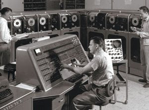
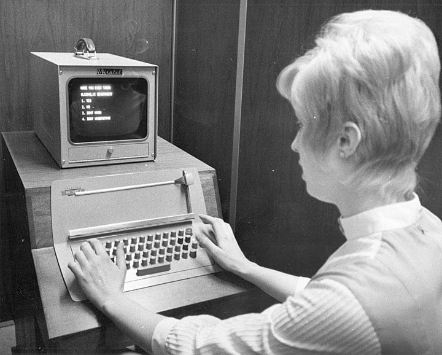
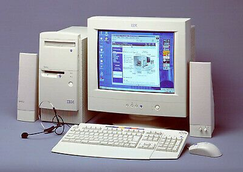
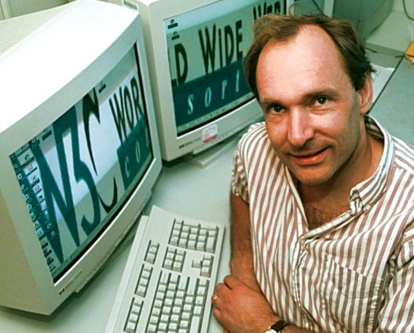
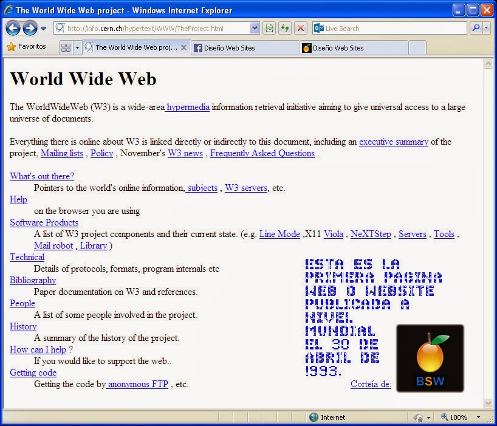

INSTITUTO TECNOLÓGICO DE ORIZABA
WEB 1.0

1945 - 1970
La Era Militar de la Informática: Las maquinas
eran utilizadas para aplicaciones militares.
Al final de la 2da Guerra Mundial, fue relevante
en la criptografía por Alan Turín, padre de la
Informática.

1946
Se desarrolla el primer ordenador
electrónico de propósito general,
ENIAC, en Pensilvania
1969
Se crea ARPANET, siendo la precursora de
Internet, fue diseñada para resistir un
ataque nuclear por lo que fue diseñada
con una arquitectura distribuida

1970 - 1980
La Era de Los Negocios para la Informática.
Se empezó a hacer uso de las computadoras
para nóminas, inventarios o contabilidad,
aunque el precio de estas era tan alto que
que solo las empresas podían permitírselo

1980 - 1990
La Era del Ordenador Personal. En esta
época se volvió posible el que un individuo
pudiera tener una computadora. Se utilizaban
principalmente para el procesamiento de
textos muy sencillos

1982
Se desarrollan los protocolos
de Internet TCP/IP
1989
Tim Berners tuvo la idea de la
World Wide Web (WWW), empezando
la Era de la WEB 1.0

1990 - 2000
* Inicia la era WEB 1.0
* Tim Burns creo el primer sitio Web
* Se creó el primer servidor que existió en Internet

1990
HTTP es el protocolo de comunicación
que permite las transferencias de
información a través de archivos,
fue desarrollado por el World Wide
Web Consortium y la Internet
Engineering Task Force
1993
HTML se reconoce formalmente al
lenguaje de marcado para la
elaboración de páginas web que
sirve de referencia del software
que conecta con la elaboración de
páginas web, define una estructura
básica y un código
1993 - 1996
* 1993: Existen 600 sitios Web en Internet.
* 1994: Aumentan hasta 10 000.
* 1996: Los sitios Web crecen hasta
más de 100 000.

1995 - 1998
* 1995: Se crea Amazon
* 1998: Se crea GOOGLE
1999
XML Metalenguaje que permite definir
lenguajes de marcas desarrollado por
el World Wide Web Consortium
utilizado para almacenar datos
en forma legible

2000
RDF Usado como un método general
para la descripción conceptual
o modelado de la información que
se implementa en los recursos web
-------------------

Fin del documento
Gracias por leer
Aprender más
Aprender HTML
Aprender CSS
Autor: Coss Espinosa Andrea Beelegui
Enviar e-mail al autor